实验5 编写、调试具体多个段的程序
1.将下面的程序编译连接，用Debug加载、跟踪，然后回答问题。
汇编代码
1 | assume cs:code,ds:data,ss:stack |
- CPU执行程序，程序返回前，data段中的数据____。
- CPU执行程序，程序返回前，CS=____，SS=，DS= 。
- 设程序加载后，CODE段的段地址为X，则DATA段的段地址为____ ，STACK段的段地址为____ 。
程序分析：由于是初次接触，我们逐步讲解
此程序考察的是内存中数据段和栈段的定义。
程序共定义了3个段（依次是数据段、栈段、代码段，注意前后的顺序）
- 一个数据段，data段。首先明确，在程序运行开始（标号start处），这个数据段就已经被定义好了，并且分配了内存空间，并赋值了。
- 一个栈段，stack。同理这个数据段在没有被人工定义为栈结构时，也被定义好了。并且分配了内存空间，并赋值了
- 一个代码段
此程序编译并连接后，使用 debug 调试（这里需要注意，一下的段地址可能由于系统不同而存在差异，主要是理解概念）
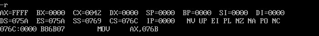
程序分析：我们什么也没有执行，此时我们在 data 段定义的数据在哪？
在 ds:0100H 处（原来我们讲过，程序最开始时 ds:00~ds:100H 是留给程序与操作系统通讯使用的 psp 内存段，参考书中 p92），也就是我们在 ds:100H、075A:100H（因为 ds 是 075A，所以075A:100H）或 0759:00 处可以看见这些定义的数据。见下图
-d ds:100
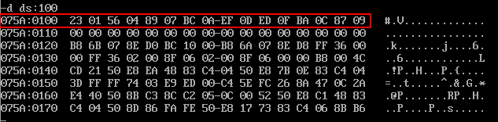
mov ax,stack
mov ss,ax
mov sp,16
直到这3个指令执行完毕，此时stack数据段被人工指定为了栈结构，（ss）=offset stack，也就是说此时ss段寄存器变量才赋值为stack段的段地址。sp指针指向了栈顶。
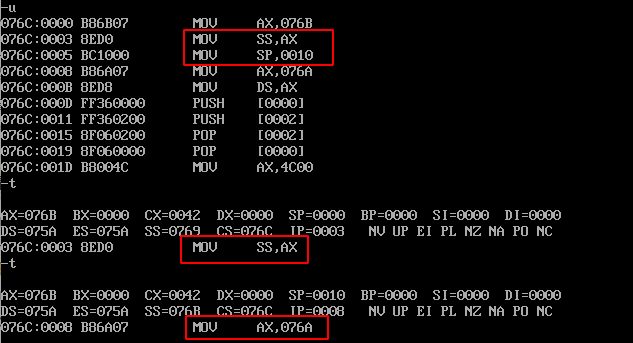
我们在上图中，看到 ss=0769，执行完这3个指令后，我们发现 ss=076B，我们用 d 命令查询：
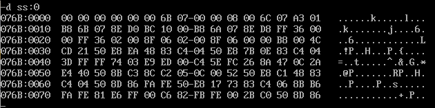
我们定义的数据在内存中的位置在程序装载后，位置是固定的，也就是说数据段的物理地址一直是固定的，只不过我们表述这个数据段时，采用了不同的段地址和偏移地址。
我们将 ss 指向了 stack 段内存，也就是说，stack 这个内存段从现在开始被人工的当做了栈空间使用。在这16个字节空间里，原来都是00；为什么现在有其他数据了？这个我们先别管。它是一些其他的有用信息。
mov ax,data
mov ds,ax
直到上面2个指令执行完毕，ds 段寄存器的值才是 offset data，也就是说此时ds指向了data段，ds:[0] 和 data:[0] 是等价的。
此时的段地址存储在ds中；也是默认的段地址寄存器；内存单元表示直接使用 [idata] 寻址就行，也可以使用 ds:[idata]。[0]代表第一个内存单元地址；[2]代表第三个内存单元地址。
同理：我们执行这二个指令后，将ds指向了data段。
push ds:[0]
指令含义：将 data 段中从第一个内存单元地址开始，按照字单元（2个字节），压栈到ss栈（或stack栈中）；通俗的讲，就是将 23 01 这二个字节按字为单元压栈。此时sp变量有变化，原来sp=0010H（16），压栈后：(sp)=(sp) - 2 = 16 - 2 = 000EH。
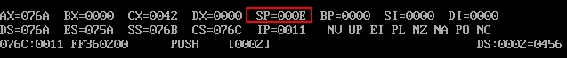
也就是说栈顶改变了。（这个变化，你可以使用debug中的t命令一步一步的执行后查看）。此时我们查看下栈中有变化吗？
-d ss:0 f
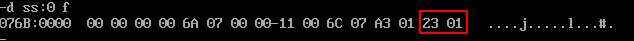
我们发现栈中确实存储了 01 23 这2个数据，而且明确了栈空间结构是从高地址向低地址发展的。至于栈中其他数据，我们不必理会。
push ds:[2]
指令含义：同理，将data段中从第三个内存单元地址开始，按照字单元（2个字节），压栈到ss栈（或stack栈中）；通俗的讲，就是将56 04这二个字节按字为单元压栈。此时sp变量有变化，原来sp=000EH（14）；压栈后（sp）=（sp）-2=14-2=000CH。也就是说栈顶改变了SP=000C。
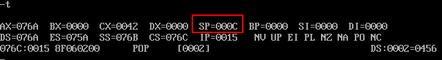
-d ss:0 f
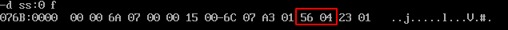
pop ds:[2]
指令含义：将栈中数据按字弹出，写入到段地址是ds（它的值是offset data或在我们的系统中是DS=0B65），偏移地址是[2]的内存单元中。如果默认段地址是ds，此指令直接可以写成：pop [2]
指令执行后：sp值有变化，因为是弹出一个字，故（sp）=（sp）+2 =000CH+2=000EH。也就是说栈顶指针sp指向有变化了。
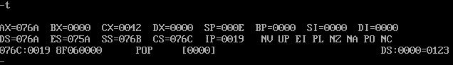
这里注意栈空间中存储栈帧的顺序，也是在以后使用栈结构时候需要注意的原则：先进后出；后进先出。我们查看下data段数据变化
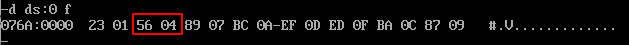
其实在内存第3、4字节中是pop弹栈回写的数据。实际是没有变化，但是经过了pop的回写的。
pop ds:[0]
指令含义：同理如上面，不多说了。
参考答案
CPU执行程序，程序返回前，data段中的数据____。
不变
CPU执行程序，程序返回前，CS=，SS=，DS=____ 。
CS=076C、SS=076B、DS=076A
设程序加载后，CODE段的段地址为X，则DATA段的段地址为____ ，STACK段的段地址为____ 。
data段的段地址为 X-2，stack段的段地址为 X-1
2.将下面的程序编译连接，用Debug加载、跟踪，然后回答问题
汇编程序
1 | assume cs:code,ds:data,ss:stack |
- CPU执行程序，程序返回前，data段中的数据____。
- CPU执行程序，程序返回前，CS=____，SS=，DS= 。
- 设程序加载后，CODE段的段地址为X，则DATA段的段地址为____ ，STACK段的段地址为____ 。
- 对于如下定义的段：
如果段中数据位 N 个字节，程序加载后，该段实际占据空间为____name segment ...... name ends
程序分析：（不再详细分析了）
首先明确：虽然我们在 data段 和 stack段 中只定义初始化了4个字节的内存，但在汇编中，直接给你分配了16个字节的空间，不足的按00补全。
结论：数据段和栈段在程序加载后实际占据的空间都是以16个字节为单位的。如果不足，以0补全填充。
在debug中查看：-d ds:100 （ 不知道为什么 ds:100 的 往上看前面解释）
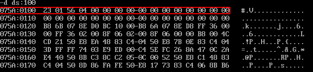
g 1d 执行到 cs:1d 位置，程序中就是 mov ax, 4C00h
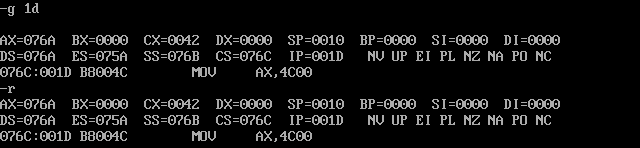
参考答案
CPU执行程序，程序返回前，data段中的数据____。
不变
CPU执行程序，程序返回前，CS=____，SS=，DS= 。
CS=076C、SS=076B、DS=076A
设程序加载后，CODE段的段地址为X，则DATA段的段地址为____ ，STACK段的段地址为____ 。
data段的段地址为 X-2，stack段的段地址为 X-1
对于如下定义的段：
name segment ...... name ends如果段中数据位 N 个字节，程序加载后，该段实际占据空间为（N/16的取整数+1）16个字节，如果 N小于16，那么实际占用16个字节（理解这个小问题）；如果N大于16，那么实际占用（N/16的取整数+1）16个字节。其实都是这个公式。
3.将下面的程序编译连接，用Debug加载、跟踪，然后回答问题。
汇编代码
1 | assume cs:code,ds:data,ss:stack |
- CPU执行程序，程序返回前，data段中的数据____。
- CPU执行程序，程序返回前，CS=____，SS=，DS= 。
- 设程序加载后，CODE段的段地址为X，则DATA段的段地址为____ ，STACK段的段地址为____ 。
程序分析：这次只不过是将 data 和 stack 段放到了 code 段后面了。那么就要注意他们段地址的变化了。
程序返回前查看（程序执行结束前）
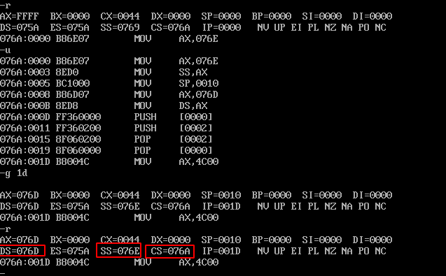
总结：在汇编源代码中，我们定义的 code 是程序执行的代码（它存储在一个我们人为规定的段code中，在程序装载时，分配空间，并将机器码写入到这段内存中）；其他的数据段（无论是逻辑上的stack段，data段等）与代码段都相邻。只不过是装载、分配内存前后的问题
参考答案
CPU执行程序，程序返回前，data段中的数据____。
执行程序后，data段有16个字节空间，前两个字数据不变，其余为00补全了
CPU执行程序，程序返回前，CS=____，SS=，DS= 。
CS=076A，SS=076E，DS=076D
设程序加载后，CODE段的段地址为X，则DATA段的段地址为____ ，STACK段的段地址为____ 。
data 段地址为 X+3，stack段地址为 X+4
（为什么是这样？怎么计算的？看cx，程序加载时，我们发现cx=0044，含义：此程序所有机器码占用的空间是44H=68字节（cx 指示 程序机器码占用空间的大小），data 和 stack 由于定义的都是小于16个字节，一律按照16个字节分配空间，其余补00；剩余的36个字节就是code段真正的可执行的机器码。由于code段不足48个字节（3*16），故程序加载时也补0了）
我们可以使用debug看看：-d cs:0
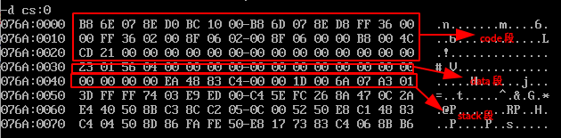
4. 如果将(1)、(2)、(3)题中的最后一条伪指令“end start”改为“end”(也就是说不指明程序的入口)，则那个程序仍然可以正确执行？请说明原因。
答案：如果不指名程序的（code段的）入口，并且使用 end 替换 end start，都能正常运行。但只有（3）题中程序可以正确的执行（因为只有它是在内存中可执行代码在最前面）。
讲解：因为如果不指名入口，程序会从加载进内存的第一个单元起开始执行，前二个题中，定义的是数据，但CPU还是将数据当做指令代码执行了。只不过程序执行时逻辑上是错误了。但真的能执行的。
如果指明了程序的入口，CPU会直接从入口处开始执行真正的机器码，直到遇到中断指令返回。此种方式能够确保程序逻辑上的正确。因此有必要为程序来指明入口。
网上许多答案都是不太明确！
5.编写 code 段中的代码，将 a段 和 b段 数据依次相加，结果存入c段
1 | assume cs:code |
书上解题思路：使用 段 es 首先指向 a 段 ，ds 指向 c 段，a 段 和 c 段相加保存在 c 段，然后 es 再 指向 b ，b 段再 和 c 段相加保存在 c 段：
1 | assume cs:code |
程序分析：
（1）这个题目一下子搞出3个数据段了。呵呵，貌似我们段寄存器不够用了。cs（代码段），ss（栈段），这二个千万别碰！那只有ds和es了。思路：将a和b段我们用一个段地址表示，存储在ds中；c段我们存储在es中。？这种方式好吗？不太好。
（2）上面已经体会了，当一个数据段不足16个字节时，按16个字节分配内存空间，其余的补0。我们发现a、b段都是定义了8个字节的数值。并且是相邻的（肯定是的），那么a段的地址我们使用[bx+idata]表示，b段我们也使用[bx+idata]表示。这种方式没有把a段和b段分开。
（3）最终决定：将es指向c段，ds分开分别的指向a段和b段，这样我们在一个循环内完成所有的工作了；程序中使用了栈保存了ds的值；
汇编代码
1 | assume cs:code |
结果分析：
（1）ds段寄存器在程序中可以存储不同的内存段的段地址，并不是唯一存储一个段地址，es也是如此。
（2）合理利用系统自动创建的栈空间，利用栈空间来保存暂存的数据。注意压栈和弹栈的顺序，确保操作的是一个数据对象。
（3）在遇到多个数据段的情况下，这种方式可以利用一个段寄存器来对多个内存段寻址。
（4）在实际工程中，在程序中保存的数据，都是程序的一些必须的初始化的数据，其他的数据都应保存在磁盘文件中，需要时才读入内存中。此例中的a、b、cz段都是其他的数据，在这里就是演示。
6.编写code段中代码，用push指令将a段中前8个字型数据逆转到存储b段中。
1 | assume cs:code |
程序分析：
（1）理解掌握栈的原理，先进后出，从高地址向低地址发展。也就是说先压栈的数据，在栈底，最后被pop出。
（2）对于数据段，我们定义2个，ds指向a段，ss指向b。ss指向了b段，也就意味着b段是人工创建的一个栈结构了。
（3）对于push和pop指令：操作的是一个栈帧或栈单元，它的操作数是一个字，在8086CPU中是一个字，2个字节，这个在a、b段定义时我们应该发现，它们都是定义的字。如果定义的是db字节呢？呵呵。一样的。
汇编代码：
1 | assume cs:code |
运行结果：
-d ds:0
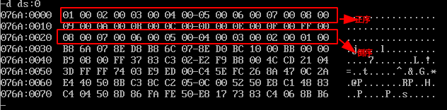
参考：http://blog.sina.com.cn/s/blog_171daf8e00102xclx.html
汇编语言实验答案 (王爽)：https://wenku.baidu.com/view/a1cd7c6c1fb91a37f111f18583d049649b660ede.html